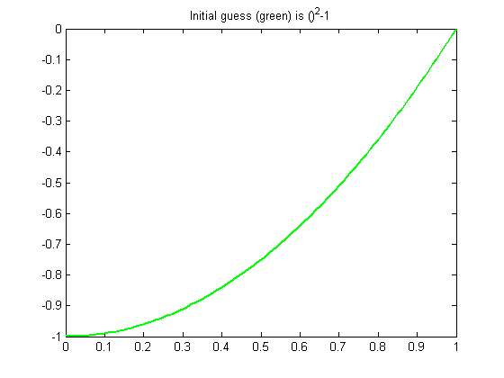
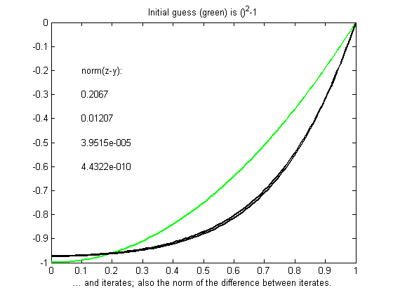
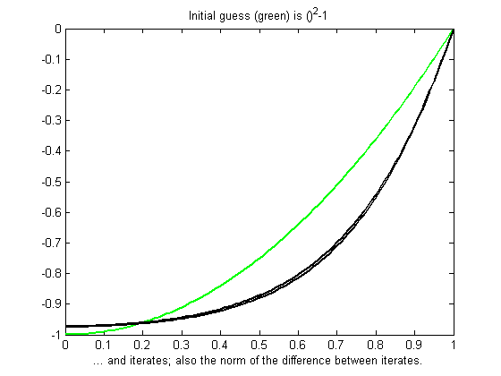
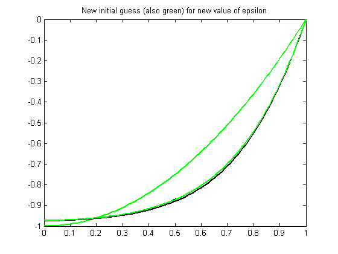
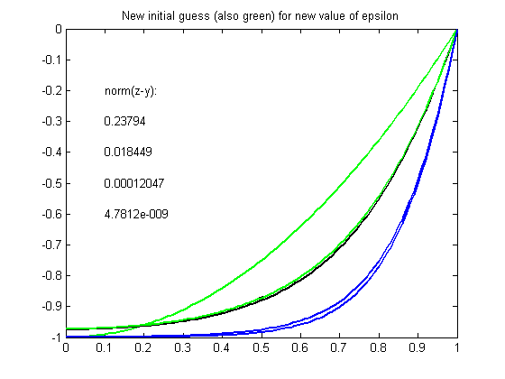
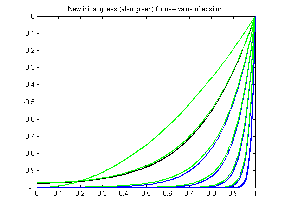
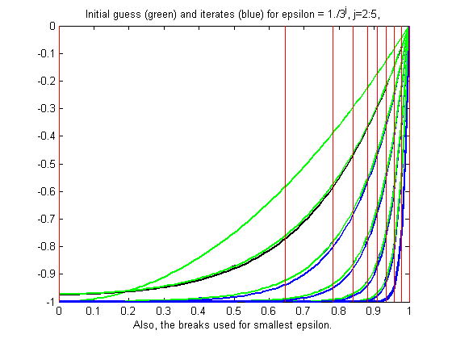
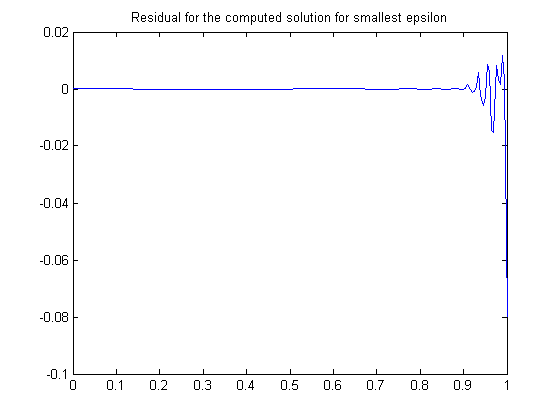

Example: Solving a Nonlinear ODE with a Boundary Layer
Illustration of toolbox use in a nontrivial problem.
Copyright 1987-2003 C. de Boor and The MathWorks, Inc. $Revision: 1.3 $
Overview
We consider the nonlinear singularly perturbed problem
epsilon D^2g(x) + (g(x))^2 = 1 on [0..1]
Dg(0) = g(1) = 0 .
This problem is already quite difficult for epsilon = .001, so we choose a modest
epsilon = .1;
We seek an approximate solution by collocation from C^1 piecewise cubics with a specified break sequence BREAKS, hence want the order k to be 4 and obtain the corresponding knot sequence as knots = augknt(breaks,4,2)
breaks = [0:4]/4; k = 4; knots = augknt(breaks,k,2)
knots =
Columns 1 through 7
0 0 0 0 0.2500 0.2500 0.5000
Columns 8 through 14
0.5000 0.7500 0.7500 1.0000 1.0000 1.0000 1.0000
The approximation space (continued)
Whatever the choice of order and knots, the corresponding spline space has dimension
n = length(knots) - k
n =
10
The number 10 of degrees of freedom fits nicely with the fact that we expect to collocate at two sites per polynomial piece, for a total of 8 conditions, bringing us to 10 conditions altogether once we add the two side conditions.
We choose two Gauss sites for each interval. For the `standard' interval [-1 .. 1]/2 of unit length, these are the two sites gauss = .5773502692*[-1;1]/2; From this, we obtain the whole collection of collocation sites by
gauss = .5773502692*[-1;1]/2; ninterv = length(breaks)-1; temp = (breaks(2:ninterv+1)+breaks(1:ninterv))/2; temp = temp([1 1],:) + gauss*diff(breaks); colsites = temp(:).';
The numerical problem we want to solve is to find a pp y of the given order and with the given knots that satisfies the (nonlinear) system
Dy(0) = 0
(y(x))^2 + epsilon D^2y(x) = 1 for x in COLSITES
y(1) = 0
If y is our current approximation to the solution, then the linear problem for the better (?) solution z by Newton's method reads
Dz(0) = 0
w_0(x)z(x) + epsilon D^2z(x) = b(x) for x in COLSITES
z(1) = 0
with w_0(x) := 2y(x), b(x) := (y(x))^2 + 1 .
In fact, by choosing w_0(1) := 1, w_1(0) := 1 , and
w_2(x) := epsilon, w_1(x) := 0 for x in COLSITES
and choosing all other values of w_0, w_1, w_2, b not yet specified to be zero, we can give our system the uniform shape
w_0(x)z(x) + w_1(x)Dz(x) + w_2(x)D^2z(x) = b(x) for x in SITES
with
sites = [0,colsites,1];
This system converts into one for the B-spline coefficients of its solution z . For this, we need the zeroth, first, and second derivative at every x in SITES and for every relevant B-spline. These values are supplied by the toolbox command SPCOL.
Here is the essential part of the online help for SPCOL:
%SPCOL B-spline collocation matrix. % % COLLOC = SPCOL(KNOTS,K,TAU) is the matrix % % [ D^m(i)B_j(TAU(i)) : i=1:length(TAU), j=1:length(KNOTS)-K ] , % % with D^m(i)B_j the m(i)-fold derivative of B_j, % B_j the j-th B-spline of order K for the knot sequence KNOTS, % TAU a sequence of sites, % both KNOTS and TAU are assumed to be nondecreasing, and % m(i) is the integer #{ j<i : TAU(j) = TAU(i) }, i.e., the 'cumulative' % multiplicity of TAU(i) in TAU. %
Linear system to be solved (continuued)
We use SPCOL to supply the matrix
colmat = spcol(knots,k, brk2knt(sites,3) )
with BRK2KNT used here to triple each entry of SITES, thus getting in COLMAT, for each x in SITES, value, first, and second derivative at x of all the relevant B-splines.
From this, we get the collocation matrix by combining the row triple associated with x using the weights w_0(x), w_1(x), w_2(x) to get the row corresponding to x of the matrix of our linear system.
colmat = spcol(knots,k, brk2knt(sites,3));
We also need a current approximation y from our spline space. Initially, we get it by interpolating some reasonable initial guess from our pp space at SITES. For that guess, we use the parabola ()^2 - 1 which does satisfy the end conditions and lies in our spline space. We obtain its B-form by interpolation at SITES. We select the relevant interpolation matrix from the full matrix COLMAT. Here it is, in several (cautious) steps:
intmat = colmat([2 1+[1:(n-2)]*3,1+(n-1)*3],:); coefs = intmat\[0 colsites.*colsites-1 0].'; y = spmak(knots,coefs.'); % We plot the result (it should be exactly ()^2-1 ), to be sure: fnplt(y,'g'), grid off, axis(axis) title('Initial guess (green) is ()^2-1') hold on
We can now complete the construction and solution of the linear system for the improved approximate solution z from our current guess y . In fact, with the initial guess y available, we now set up an iteration, to be terminated when the change z-y is less than a specified TOLERANCE. The max-norms of these changes are shown above.
tolerance = 6.e-9; xlabel('... and iterates; also the norm of the difference between iterates.') jc = -.2; hh(1) = text(.1,jc,'norm(z-y): '); while 1 vtau = fnval(y,colsites); weights=[0 1 0; [2*vtau.' zeros(n-2,1) repmat(epsilon,n-2,1)]; 1 0 0]; colloc = zeros(n,n); for j=1:n colloc(j,:) = weights(j,:)*colmat(3*(j-1)+[1:3],:); end coefs = colloc\[0 vtau.*vtau+1 0].'; z = spmak(knots,coefs.'); fnplt(z,'k') maxdif = max(max(abs(z.coefs-y.coefs))); jc = jc-.1; hh(end+1) = text(.1,jc,num2str(maxdif)); if (maxdif<tolerance), break, end % now reiterate y = z; end
Getting ready for a smaller epsilon
That looks like quadratic convergence, as expected from a Newton iteration.
If we now decrease EPSILON, we create more of a boundary layer near the right endpoint, and this calls for a nonuniform mesh. We use NEWKNT to construct an appropriate (finer) mesh from the current approximation:
knots = newknt(z, ninterv+1); breaks = knt2brk(knots); knots = augknt(breaks,4,2); n = length(knots)-k;
Collocation sites for new breaks
Next, we get the collocation sites corresponding to the new BREAKS, and then the new collocation matrix:
delete(hh) ninterv = length(breaks)-1; temp = ((breaks(2:ninterv+1)+breaks(1:ninterv))/2); temp = temp([1 1], :) + gauss*diff(breaks); colsites = temp(:).'; sites = [0,colsites,1]; colmat = spcol(knots,k, brk2knt(sites,3));
We obtain the initial guess y as the interpolant from the current spline space to the computed solution z . We plot the resulting interpolant (it should be close to our current solution) to be sure.
intmat = colmat([2 1+[1:(n-2)]*3,1+(n-1)*3],:); y = spmak(knots,[0 fnval(z,colsites) 0]/intmat.'); fnplt(y,'g') title('New initial guess (also green) for new value of epsilon'), xlabel('')
Iteration with smaller epsilon
Now we divide EPSILON by 3 and repeat the above iteration. Convergence is again quadratic.
epsilon = epsilon/3; jc = -.2; hh = []; hh(1) = text(.1,jc,'norm(z-y): '); while 1 vtau = fnval(y,colsites); weights=[0 1 0; [2*vtau.' zeros(n-2,1) repmat(epsilon,n-2,1)]; 1 0 0]; colloc = zeros(n,n); for j=1:n colloc(j,:) = weights(j,:)*colmat(3*(j-1)+[1:3],:); end coefs = colloc\[0 vtau.*vtau+1 0].'; z = spmak(knots,coefs.'); fnplt(z,'b') maxdif = max(max(abs(z.coefs-y.coefs))); jc = jc-.1; hh(end+1)= text(.1,jc,num2str(maxdif)); if (maxdif<tolerance), break, end % now reiterate y = z; end
For a much smaller epsilon, we merely repeat these calculations, dividing epsilon by 3 each time.
delete(hh); for ee = 1:4 knots = newknt(z, ninterv+1); breaks = knt2brk(knots); knots = augknt(breaks,4,2); n = length(knots)-k; ninterv = length(breaks)-1; temp = ((breaks(2:ninterv+1)+breaks(1:ninterv))/2); temp = temp([1 1], :) + gauss*diff(breaks); colsites = temp(:).'; sites = [0,colsites,1]; colmat = spcol(knots,k, brk2knt(sites,3)); intmat = colmat([2 1+[1:(n-2)]*3,1+(n-1)*3],:); y = spmak(knots,[0 fnval(z,colsites) 0]/intmat.'); fnplt(y,'g') epsilon = epsilon/3; while 1 vtau = fnval(y,colsites); weights=[0 1 0; [2*vtau.' zeros(n-2,1) repmat(epsilon,n-2,1)]; 1 0 0]; colloc = zeros(n,n); for j=1:n colloc(j,:) = weights(j,:)*colmat(3*(j-1)+[1:3],:); end coefs = colloc\[0 vtau.*vtau+1 0].'; z = spmak(knots,coefs.'); fnplt(z,'b') maxdif = max(max(abs(z.coefs-y.coefs))); if (maxdif<tolerance), break, end % now reiterate y = z; end end
Plot the breaks used for smallest epsilon
Here is the final distribution of breaks, showing NEWKNT to have worked well in this case.
breaks = fnbrk(fn2fm(z,'pp'),'b'); bb = repmat(breaks,3,1); cc = repmat([0;-1;NaN],1,length(breaks)); plot(bb(:),cc(:),'r') title('Initial guess (green) and iterates (blue) for epsilon = 1./3^j, j=2:5,') xlabel('Also, the breaks used for smallest epsilon.') hold off
Plot residual for smallest epsilon
Recall that we are solving the ODE
epsilon D^2g(x) + (g(x))^2 = 1 on [0..1]
As a check, we compute and plot the residual for the computed solution for the smallest epsilon. This, too, looks satisfactory.
xx = linspace(0,1,201);
plot(xx, 1 - epsilon*fnval(fnder(z,2),xx) - (fnval(z,xx)).^2)
title('Residual for the computed solution for smallest epsilon')